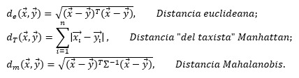
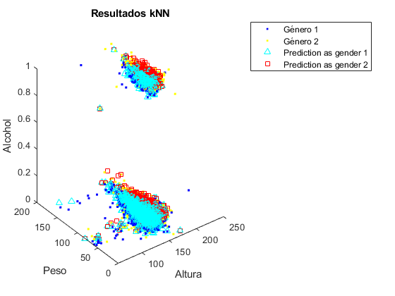

Contents
clear, clc
tic % Inicia el conteo del tiempo
Sección I: Desempeño de kNN para diferentes métricas de distancia.
El presente laboratorio lo iniciaremos implementando el algoritmo de k-Nearest Neigbors (kNN) para varios valores de k y para varios tipos de distancias en el espacio, recordando que este algoritmo consiste en la clasificación automática de varios puestos de muestra respecto a los puntos conocidos más cercanos. Luego de observado el comportamiento del algoritmo ante diferentes tipos de distancias se estará implementando una variación a dicho proceso, llamado condensed k-NN, utilizado para reducir el set de datos para la clasificación.
Se nos solicita adaptar el algoritmo desarrollado en el laboratorio 1 para que este calcule las distancias de varios métodos diferentes, los utilizados en el presente serán la distancia euclideana, Manhattan y Mahalanobis.

Se puede observar una variación que se le ha aplicado al algoritmo visto en el laboratorio 1, donde podemos observar que se le solicita al usuario el tipo de distancia con la que va a trabajar
A continuación se presentan los tiempos de ejecución de cada tipo de distancia para cada valor de k y sus respectivos valores de precisión.
% Importa los datos train_set = readtable("Train set.xlsx"); test_set = readtable("Test set.xlsx"); g1 = train_set(train_set.gender==1, :); g2 = train_set(train_set.gender==2, :); % Grafica los datos plot3(g1.height, g1.weight, g1.alco, '.b') hold on plot3(g2.height, g2.weight, g2.alco, '.y') % Se solicita la cantidad de vecinos a considerar. nTrainData = length(train_set.height); %size(train_set); ValReales = test_set.gender; [acc_K1_DistManhattan, tiempo_K1_DistManhattan] = KNN(1, 1, test_set, train_set, ValReales) [acc_K1_DistManhattan, tiempo_K3_DistManhattan] = KNN(3, 1, test_set, train_set, ValReales) [acc_K1_DistManhattan, tiempo_K5_DistManhattan] = KNN(5, 1, test_set, train_set, ValReales) [acc_K1_DistManhattan, tiempo_K9_DistManhattan] = KNN(9, 1, test_set, train_set, ValReales) [acc_K1_DistManhattan, tiempo_K15_DistManhattan] = KNN(15, 1, test_set, train_set, ValReales) [acc_K1_DistEuc, tiempo_K1_DistEuc] = KNN(1, 2, test_set, train_set, ValReales) [acc_K1_DistEuc, tiempo_K3_DistEuc] = KNN(3, 2, test_set, train_set, ValReales) [acc_K1_DistEuc, tiempo_K5_DistEuc] = KNN(5, 2, test_set, train_set, ValReales) [acc_K1_DistEuc, tiempo_K9_DistEuc] = KNN(9, 2, test_set, train_set, ValReales) [acc_K1_DistEuc, tiempo_K15_DistEuc] = KNN(15, 2, test_set, train_set, ValReales) [acc_K1_DistMahalanobis, tiempoK1DistMahalanobis] = KNN(1, 3, test_set, train_set, ValReales) [acc_K3_DistMahalanobis, tiempoK3DistMahalanobis] = KNN(3, 3, test_set, train_set, ValReales) [acc_K5_DistMahalanobis, tiempoK5DistMahalanobis] = KNN(5, 3, test_set, train_set, ValReales) [acc_K9_DistMahalanobis, tiempoK9DistMahalanobis] = KNN(9, 3, test_set, train_set, ValReales) [acc_K15_DistMahalanobis, tiempoK15DistMahalanobis] = KNN(15, 3, test_set, train_set, ValReales)
acc_K1_DistManhattan =
0.7009
tiempo_K1_DistManhattan =
24.0272
acc_K1_DistManhattan =
0.7251
tiempo_K3_DistManhattan =
28.3030
acc_K1_DistManhattan =
0.7455
tiempo_K5_DistManhattan =
25.4329
acc_K1_DistManhattan =
0.7564
tiempo_K9_DistManhattan =
25.9776
acc_K1_DistManhattan =
0.7678
tiempo_K15_DistManhattan =
25.2988
acc_K1_DistEuc =
0.7008
tiempo_K1_DistEuc =
26.5273
acc_K1_DistEuc =
0.7254
tiempo_K3_DistEuc =
27.5501
acc_K1_DistEuc =
0.7456
tiempo_K5_DistEuc =
27.4555
acc_K1_DistEuc =
0.7566
tiempo_K9_DistEuc =
28.6168
acc_K1_DistEuc =
0.7681
tiempo_K15_DistEuc =
27.9607
acc_K1_DistMahalanobis =
0.7010
tiempoK1DistMahalanobis =
30.5928
acc_K3_DistMahalanobis =
0.7249
tiempoK3DistMahalanobis =
31.1175
acc_K5_DistMahalanobis =
0.7451
tiempoK5DistMahalanobis =
29.7090
acc_K9_DistMahalanobis =
0.7560
tiempoK9DistMahalanobis =
31.6546
acc_K15_DistMahalanobis =
0.7668
tiempoK15DistMahalanobis =
29.8922
 Se ha podido observar que los tipos de distancias no alteran tanto la precisión del método de k vecinos más cercanos como lo hace el valor de k, por lo que podemos intuir que utilizar varias métricas de distancias no alteran del todo el proceso, además de que no podemos garantizar buena eficiencia en cuanto al tiempo.
toc % Termina conteo de tiempo function [acc, tiempoKNN]=KNN(k, DistType, test_seta, train_seta, ValRealesa) tic; % Se crea una matriz correspondiente a la inversa de los valores de % varianza sig = var([train_seta.height(:) train_seta.weight(:) train_seta.alco(:)]); Sig = [sig(1) 0 0; 0 sig(2) 0; 0 0 sig(3)]; Sig1 = inv(Sig); Sig2 = [Sig1(1,1) Sig1(2,2) Sig1(3,3)]; % k = input('Introduzca la cantidad de vecinos: '); % DistType = input('Seleccione el tipo de distancia \n (1) Manhattan, (2) Euclindeana, (3) Mahalanobis: '); for i = 1:length(test_seta.height) i; switch DistType % Calcula la distancia a cada punto dado case 1 % Distancia Manhattan d = abs([test_seta.height(i), test_seta.weight(i), test_seta.alco(i)] - [train_seta.height(:) train_seta.weight(:) train_seta.alco(:)]); d = d(:,1)+d(:,2)+d(:,3); case 2 % Distancia Euclideana %Rep = repmat([test_set.height(i), test_set.weight(i), test_set.alco(i)], nTrainData, 1); d = (([test_seta.height(i), test_seta.weight(i), test_seta.alco(i)] - [train_seta.height(:) train_seta.weight(:) train_seta.alco(:)]).^2); d = sqrt(d(:,1)+d(:,2)+d(:,3)); case 3 % Distancia Mahalanobis d = (([test_seta.height(i), test_seta.weight(i), test_seta.alco(i)] - [train_seta.height(:) train_seta.weight(:) train_seta.alco(:)]).^2)./Sig2; %d = sqrt((d)*Sig1*transpose(d)); d = sqrt(d(:,1)+d(:,2)+d(:,3)); otherwise % Por si acaso print('Ok.') end [dis, pos] = mink(d, k); test_seta.gender(i) = mode(train_seta.gender(pos)); end % Se grafica el resultado p1 = test_seta(test_seta.gender==1, :); p2 = test_seta(test_seta.gender==2, :); plot3(p1.height, p1.weight, p1.alco, 'c^') plot3(p2.height, p2.weight, p2.alco, 'rs') legend('Género 1','Género 2','Prediction as gender 1','Prediction as gender 2') title('Resultados kNN') xlabel('Altura') ylabel('Peso') zlabel('Alcohol') % Calcula la accuracy/Precisión acc = sum(ValRealesa==test_seta.gender)/length(test_seta.gender); tiempoKNN = toc; end
Elapsed time is 31.006962 seconds.